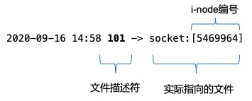
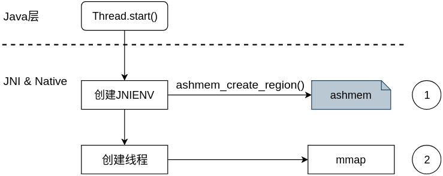

Android句柄泄漏分析¶
1. 基本概念¶
1.1 什么是句柄¶
句柄(file descriptor)即文件描述符，在 Linux 中一切皆文件，系统在运行时有大量的文件操作，内核为了高效管理已被打开的文件会创建索引，用来指向被打开的文件，这个索引即是文件描述符，其表现形式为一个非负整数。由于Android基 于Linux 系统，所以Android也继承了文件描述符系统。
在adb shell中，可以通过命令 ls -la /proc/{pid}/fd 查看当前进程文件描述符使用信息，执行该操作需要root后的手机
root@x86:/ # ls -la /proc/732/fd
lrwx------ root root 2021-10-24 23:53 0 -> /dev/null
lrwx------ root root 2021-10-24 23:53 1 -> /dev/null
lr-x------ root root 2021-10-24 23:53 10 -> /dev/__properties__
lrwx------ root root 2021-10-24 23:53 11 -> anon_inode:[eventpoll]
lr-x------ root root 2021-10-24 23:53 12 -> /dev/urandom
lr-x------ root root 2021-10-24 23:53 13 -> /system/priv-app/SystemUI/SystemUI.apk
lrwx------ root root 2021-10-24 23:53 14 -> anon_inode:[eventfd]
lrwx------ root root 2021-10-24 23:53 15 -> anon_inode:[eventpoll]
lrwx------ root root 2021-10-24 23:53 16 -> anon_inode:[eventfd]
lrwx------ root root 2021-10-24 23:53 17 -> socket:[12554]
lrwx------ root root 2021-10-24 23:53 18 -> anon_inode:[eventpoll]
lrwx------ root root 2021-10-24 23:53 19 -> anon_inode:[eventfd]
lrwx------ root root 2021-10-24 23:53 2 -> /dev/null
lrwx------ root root 2021-10-24 23:53 20 -> anon_inode:[eventpoll]
lrwx------ root root 2021-10-24 23:53 21 -> anon_inode:[eventfd]
lrwx------ root root 2021-10-24 23:53 22 -> anon_inode:[eventpoll]
lrwx------ root root 2021-10-24 23:53 23 -> anon_inode:[eventfd]
lrwx------ root root 2021-10-24 23:53 24 -> anon_inode:[eventpoll]
lrwx------ root root 2021-10-24 23:53 25 -> /dev/nemuguest
lrwx------ root root 2021-10-24 23:53 26 -> socket:[12668]
lrwx------ root root 2021-10-24 23:53 27 -> /dev/vtunnel
lrwx------ root root 2021-10-24 23:53 28 -> /dev/vtunnel
lrwx------ root root 2021-10-24 23:53 29 -> socket:[12727]
lrwx------ root root 2021-10-24 23:53 3 -> socket:[11857]
lrwx------ root root 2021-10-24 23:53 31 -> socket:[15743]
lrwx------ root root 2021-10-24 23:53 32 -> /dev/ashmem
l-wx------ root root 2021-10-24 23:53 4 -> /sys/kernel/debug/tracing/trace_marker
上图中 箭头前的数字部分是文件描述符，箭头指向的部分是对应的文件信息。

同时通过ls -al /proc/{pid}/fd | wc -l来查看查看进程FD数量
1.2 fd limit¶
可以打开的文件描述符是有上限的，所以分到每一个进程可打开的文件描述符也是有限的。可以通过命令 cat /proc/sys/fs/file-max 查看所有进程允许打开的最大文件描述符数量，同样，执行该操作也需要root后的手机
root@x86:/ # cat /proc/sys/fs/file-max
206453
也可以通过命令 **ulimit -n **查看单个进程的允许打开的最大文件描述符数量。Linux默认进程最大文件描述符数量是1024。
root@x86:/ # ulimit -n
1024
注意：较新款的Android这个值被改为32768。
1.3 句柄简单分类¶
针对android应用的文件描述符先简单做一个说明，平时查句柄问题一般可以通过对比哪一类文件描述符数量过高，来缩小问题范围。
| 类别标识 | FD类型 | 说明 |
|---|---|---|
| 1 | /data/data/或者/data/app/ | 打开文件相关 |
| 2 | socket | 与网络请求或进程通信相关 |
| 3 | /dev/ashmem | 与数据库操作或者线程创建相关 |
| 4 | anon_inode:[eventpoll/eventfd] | 与HandlerThread或带looper线程相关 |
| 5 | anon_inode:[timerfd] | 系统文件描述符类型，和应用关系不大 |
| 6 | anon_inode:[dmabuf] | InputChannel泄漏时增加明显 |
| 7 | pipe: | 与HandlerThread带looper线程相关 |
| 8 | /sys/ | 一般是系统操作使用 |
2. 句柄泄漏场景¶
2.1 Resource相关¶
Stream¶
for (index in 1..100) {
var out: FileOutputStream? = null
try {
val fileName = "temp_${index}"
val file = File(cacheDir, fileName)
file.createNewFile()
out = FileOutputStream(file)
} catch (e: Exception) {
e.printStackTrace()
} finally {
// out?.close()
}
}
调用上面这段代码会出现大量上面表格中1类别的FD，因为在使用完 FileOutputStream 后没有及时释放。每次创建 file 对象，即使它都是打开同一个文件，系统依然会每次都为进程创建不同的FD来指向这个文件流。
Android 中经常会使用到 FileInputStream，FileOutputStream，FileReader，FileWriter 等输入输出流，处理不好会导致内存溢出和FD泄漏。需要及时关闭，应当在finally块中操作，保证一定能close掉。
文件句柄，创建方式为底层最终调用系统函数open，会生成一个int的fd值。
Cursor¶
public void problemMethod() {
Cursor cursor = query(); // 假设 query() 是一个查询数据库返回 Cursor 结果的函数
if (flag == false) { // 出现了提前返回
return;
}
cursor.close();
}
与输入输出流相似，数据库查询的 Cursor 如果没有及时进行 Close 操作，也会出现FD泄漏的情况。这类 FD泄漏会导致出现表格中3类别的FD。
大概原理是：通过Uri查询数据库所得到的数据集，保存在native层的CursorWindow中。CursorWindow的实质是共享内存的抽象，以实现跨进程数据共享。共享内存所采用的实现方式是文件映射。在ContentProvider端透过SQLiteDatabase的封装查询到的数据集保存在CursorWindow所指向的共享内存中。然后通过Binder把这片共享内存传递到ContentResolver端，即查询端。这样客户就能够通过Cursor来访问这块共享内存中的数据集了。具体源码分析查看SQLite泄漏
2.2 HandlerThread¶
for (index in 1..100) {
val thread = HandlerThread("background-refresh-thread")
thread.start()
val handler = Handler(thread.looper)
// destroy(handler, thread)
}
private fun destroy(handler: Handler, handlerThread: HandlerThread) {
handlerThread.quitSafely()
handler.removeCallbacksAndMessages(null)
}
HandlerThread在不需要使用的时候，需要调用上述代码中的destroy方法来释放资源。HandlerThread FD泄漏会导致出现表格中4类别的FD。
HandlerThread会泄漏文件描述符的原因是使用了Looper，所以如果普通Thread中使用了Looper，也会有这个问题。Looper对象初始化时Looper.prepare() 需要fd资源，会消耗一对fd(eventFd和epollFd)，这两个fd是用来实现线程间通信的。
2.3 InputChannel¶
for (index in 1..10) {
val alertDialog = AlertDialog.Builder(this)
.setTitle("test leak")
.create()
alertDialog.show()
}
运行上述代码，会发现多了10个表格中2类别(也就是socket)的FD。这是因为Dialog内部会调用WindowManager.addView，WindowManager.addView 的每次调用，最终会调用WMS的 addWindow 方法，WMS在其中会创建 InputChannel 用于进行跨进程通信。本质上是初始化了一对socket文件（会在服务端进程和客户端进程各创建一个）进行通信，如果不调用 removeView 这对FD将得不到释放。
如果是这种FD泄漏，一般异常log会出现InputChannel相关关键词，如Could not read input channel file descriptors from parcel，对于此类异常，也可以通过adb shell dumpsys window查看一下当前的window信息，即可以比较明确的看出是哪个window有异常，然后找原因解决。
如上面的代码，执行dumpsys window命令之后，会发现
WINDOW MANAGER ANIMATOR STATE (dumpsys window animator)
DisplayContentsAnimator #0:
Window #0: WindowStateAnimator{e5d6e54 com.android.systemui.ImageWallpaper}
Window #1: WindowStateAnimator{e5dc1fd com.mumu.launcher/com.mumu.launcher.Launcher}
Window #2: WindowStateAnimator{5b4def2 com.adison.andoridnotes/com.adison.notes.ApiDemos}
Window #3: WindowStateAnimator{b1cd943 com.adison.andoridnotes/com.adison.notes.ApiDemos}
Window #4: WindowStateAnimator{24d1bc0 com.adison.andoridnotes/com.adison.notes.perf.FDLeak}
Window #5: WindowStateAnimator{b36be52 com.adison.andoridnotes/com.adison.notes.perf.FDLeak}
Window #6: WindowStateAnimator{9b83523 com.adison.andoridnotes/com.adison.notes.perf.FDLeak}
Window #7: WindowStateAnimator{fb17a20 com.adison.andoridnotes/com.adison.notes.perf.FDLeak}
Window #8: WindowStateAnimator{686efd9 com.adison.andoridnotes/com.adison.notes.perf.FDLeak}
Window #9: WindowStateAnimator{f5e6d9e com.adison.andoridnotes/com.adison.notes.perf.FDLeak}
Window #10: WindowStateAnimator{6cf007f com.adison.andoridnotes/com.adison.notes.perf.FDLeak}
Window #11: WindowStateAnimator{984184c com.adison.andoridnotes/com.adison.notes.perf.FDLeak}
Window #12: WindowStateAnimator{36db095 com.adison.andoridnotes/com.adison.notes.perf.FDLeak}
Window #13: WindowStateAnimator{9bfc5aa com.adison.andoridnotes/com.adison.notes.perf.FDLeak}
Window #14: WindowStateAnimator{5d259b com.adison.andoridnotes/com.adison.notes.perf.FDLeak}
Window #15: WindowStateAnimator{fc980f9 KeyguardScrim}
Window #16: WindowStateAnimator{7adf83e StatusBar}
很明显，com.adison.notes.perf.FDLeak有异常addWindow操作。
2.4 Java Thread Start¶
Java在起线程的时候也会需要开Fd资源，如果线程生命周期操作不当，当起的线程过多时也会导致Fd泄漏问题，当然这里也是会经常躺枪。具体可以这篇文章：不可思议的OOM。
线程start的简化流程如下：

对于1的地方，ashmem_create_region 会创建一块ashmen匿名共享内存,并返回一个文件描述符，如果Fd资源不足了，会报出类似java.lang.OutOfMemoryError: Could not allocate JNI Env调用栈错误，这时这里有可能只是躺枪，可能是已经有Fd泄漏了导致再起线程时这里创建JNIENV需要打开Fd失败。
对于2的地方，如果内存资源不足了，或者没有连续虚拟地址可用会抛出java.lang.OutOfMemoryError: pthread_create (1040KB stack) failed: Try again类似错误调用栈，这个时候应该去调查为何虚拟地址不足，这是真正OOM的问题了。
3. 句柄泄漏排查¶
3.1 句柄泄漏概述¶
句柄泄露是指程序中已分配的fd由于某种原因未释放或者无法释放，造成fd句柄占用越来越多，当达到进程上限后，程序将发生崩溃，而需要fd资源的场景很多，即在fd资源不足时，这些需要fd资源的很多场景，代码都有可能出现异常从而进程crash或功能异常，因此这些场景可能只是躺枪导致进程崩溃，真正罪魁祸首应该是大量占用fd资源的地方。 因此，Fd泄漏的原因一般都有如下特点：
- 同一个问题可能出现不同堆栈
- 比较隐晦
3.2 句柄泄漏堆栈常见关键词¶
如果你的应用崩溃堆栈有以下关键词，恭喜你，你的应用可能存在文件描述符泄漏。
- Xxx too many open files
- Could not allocate JNI Env
- Could not allocate dup blob fd
- Could not read input channel file descriptors from parcel
- InputChannel is not initialized
- Could not open input channel pair
- CursorWindow: Could not allocate CursorWindow
3.3 句柄泄漏分析¶
句柄泄漏可以通过多方面信息去分析：
-
logcat 查看异常栈情况，什么信息在频繁的打印，涉及到fd open的日志频繁打印是最值得怀疑的地方。
-
句柄泄漏通常会导致卡顿，内存飙升等异常现象，可以在进程复现未挂的时候抓取想要的信息：
-
查看fd信息
adb shell ls -a -l /proc/{pid}/fd，通过对比前面表格中哪一类文件描述符数量过高，来缩小问题范围。 - 查看进程线程信息：
ps -t {pid}，跟线程相关的fd泄漏通过进程的信息可以很快定位出异常线程。 - 查看是否有异常window：
adb shell dumpsys window，用于解决 InputChannel 相关的泄漏问题。 -
抓取hprof定位资源使用情况
-
线上监控：在应用crash的时候或者定时轮询当前进程使用的FD数量，在达到阈值时，通过readlink的方式读取/proc/self/fd的信息，以获取fd信息，示例代码如下：
List<String> dumpInfo = new ArrayList<>();
String fdDirPath = String.format("/proc/%d/fd/", Process.myPid());
File[] fds = new File(fdDirPath).listFiles();
if (fds == null) {
dumpInfo.add("Unable to list " + fdDirPath);
} else {
for (File f : fds) {
String fdSymLink = f.getAbsolutePath();
String resolvedPath = "";
try {
resolvedPath = Os.readlink(fdSymLink);
} catch (ErrnoException ex) {
resolvedPath = ex.getMessage();
}
dumpInfo.add(fdSymLink + "\t" + resolvedPath);
}
}
// Dump the fds & paths to a temp file.
try {
File dumpFile = File.createTempFile("fd_", "", dumpDir);
Path out = Paths.get(dumpFile.getAbsolutePath());
Files.write(out, dumpInfo, StandardCharsets.UTF_8);
} catch (IOException ex) {
Log.w(TAG, "Unable to write open descriptors to file: " + ex);
}